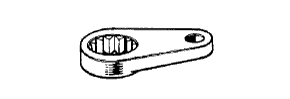

Transfer ASSY (4WD) Preparation [Disassembly]
 | 09308-00010 | Oil seal plastic |
|  | 09326-20011 | Output shaft bearing Rock nut wrench |
| 09504-22012 | Differential Side washer- Rim-Ba-Ba & Replying-Sa- | |
| 09556-16030 | Differential Drive pinion Horeding Tsu Le 28 | |
 | 09930-00010 | Drive shaft nutselle |
| 09950-00020 | Bearlinger remover | |
 | 09950-40011 | Plastic-set |
 | (09951-04010) | Hanger 150 |
 | (09952-04010) | Slide arm |
 | (09953-04020) | Center bolt 150 |
 | (09954-04010) | Arm 25 |
| (09955-04061) | Crow No.6 | |
 | (09957-04010) | attachment |
 | (09958-04011) | Holder- |
 | 09950-60010 | Replayer set |
 | (09951-00400) | Replacer 40 |
| (09951-00440) | Replacer 44 |
| Plastic hammer | ||
 | 2046-08 | Dial gauge (10mm) Treated as Banzai Co., Ltd. |
 | V-150B | V block Treated as Banzai Co., Ltd. |
| TM-110 | Dial gauge (10mm) Treatment of Iyasaka Co., Ltd. |
| VBB-150 | V block Treatment of Iyasaka Co., Ltd. |
| MB-B | Magnetic base Banzai Co., Ltd. | |
 | SF3N | F -type torque wrench (3n · m) Banzai Co., Ltd. |
| SF6N | F -type torque wrench (6n · m) Banzai Co., Ltd. |
 | ES-17B | Engine stand Treated as Banzai Co., Ltd. |
| ES-5TB | A / T overhaul for FR attachment Treated as Banzai Co., Ltd. | |
 | IES-17B | Engine stand Treatment of Iyasaka Co., Ltd. |
 | TL-FR | A / T overhaul for FR attachment Treatment of Iyasaka Co., Ltd. |
| Toyota genuine high poiid gear oil SX | ||
| Gwangmyan | ||
| Fragment |